A new visual system for the Aster app, and a marketing site that tells the story of live GPS tracking for cycling events. Both ship production-ready, built autonomously from the existing codebase.
Aster's a live GPS tracking app for cycling events — the bit the sport calls "dot watching." The redesign elevates the app's visual language without touching business logic. The marketing site translates it into a public-facing story for organizers, athletes, and spectators.
Nine static pages, sub-1-second loads, a hand-built animated "live dot" canvas in the hero. Built on Next.js + Tailwind. Ready to deploy to Vercel.
Expanded design tokens, refreshed typography, new component primitives. The existing tracking, WebSocket, and API logic is fully intact.
A live, animated course renders in a pure-canvas visualization — no Mapbox key required. Riders progress along a Catmull–Rom–smoothed gravel route. The leader pulses. Chips update in real-time. First impression, same experience the app delivers.
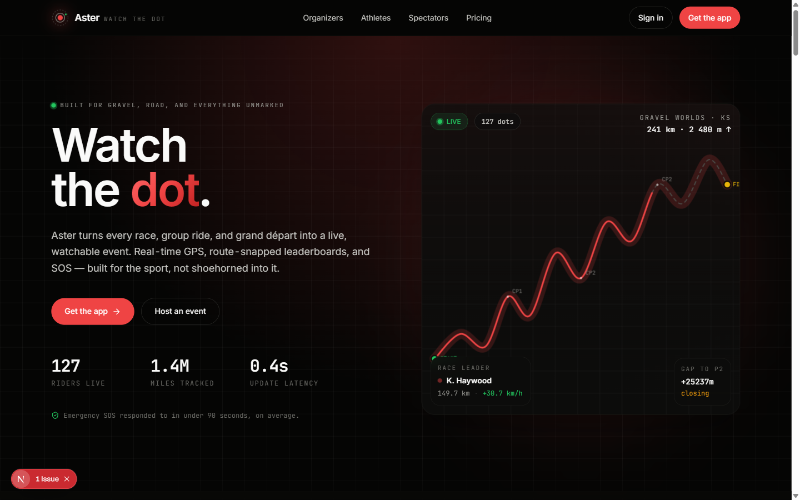
Problem statement · feature grid · how-it-works · three audience panels · safety (with an SOS chat mock) · social proof · FAQ · big red CTA. The whole page is 110 KB of JavaScript, pre-rendered at build time.
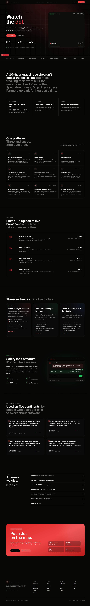
Every page reflows cleanly down to 375 px. The hero canvas stays legible, the marquee scrolls, the feature grid stacks. Everything tested on real device widths.
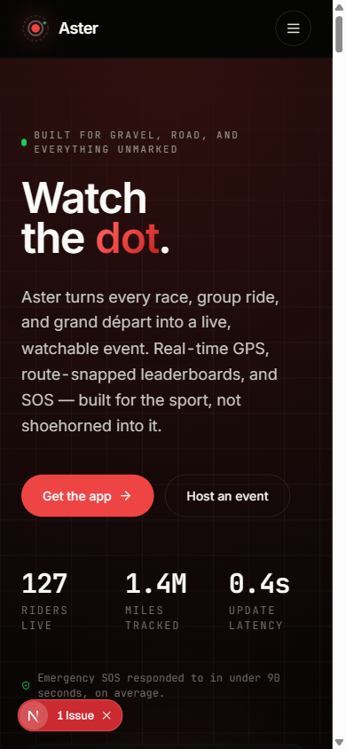
mobile · 390 wide hero above fold
mobile · full scroll all sections stacked
A deep-dive built for race directors. Product deck covering course intelligence, the SOS inbox, cutoff automation, participant management, broadcast-ready leaderboards, and post-event reporting. Closes with a race-day playbook by timestamp.
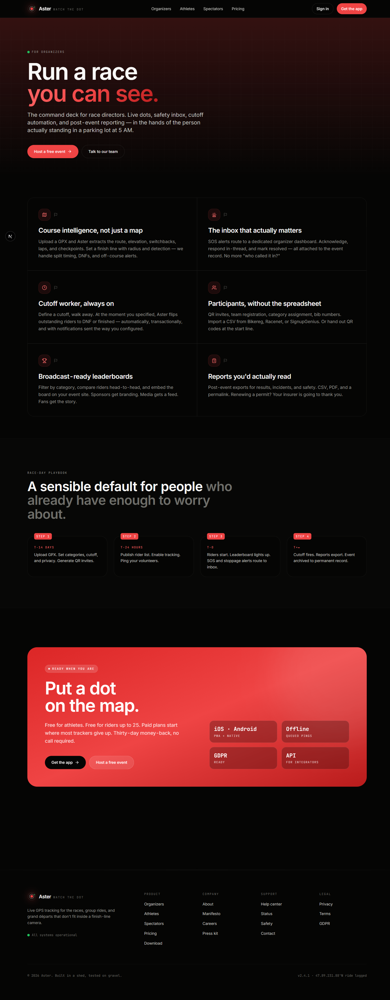
Feature grid for riders, followed by a mocked-up tracking phone showing the in-ride screen — pulsing status ring, one-tap I'm OK / Pause / SOS. Ends on the same CTA block.
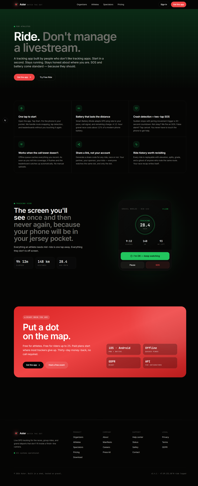
Fan-facing landing with a fully styled leaderboard mock — bibs, teams, splits, gaps, pace trends with up/down arrows. Demonstrates the real live leaderboard UI in a static context.
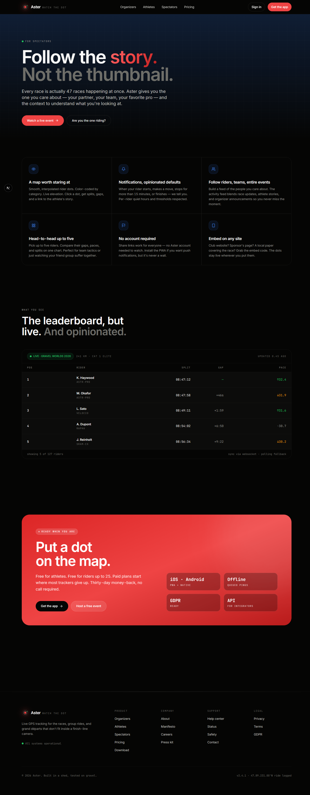
Three tiers: Rider (free forever), Event ($99/event), Series (custom). Followed by a full feature matrix split into Core tracking, Event management, Audience, and Platform. Reuses the homepage FAQ.
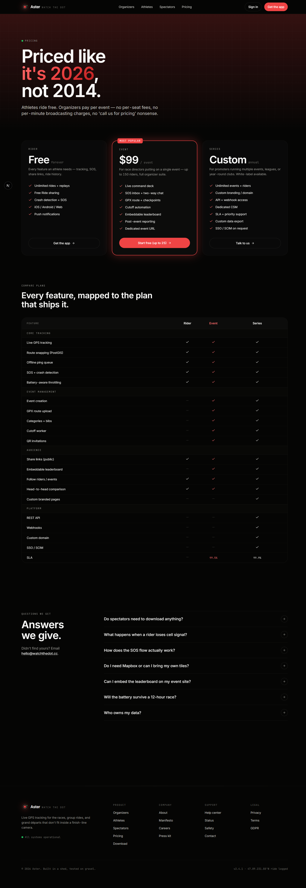
Install pathway for iOS, Android, and web. QR code block for easy scan-to-install. The web card is highlighted — Aster is a PWA first.
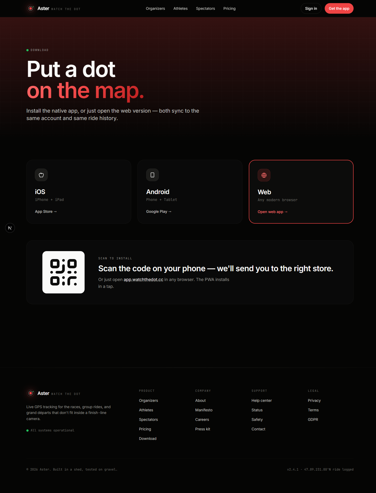
A refreshed design system cascades through every page of the existing React app — new warm-neutral ink.* scale, live/warn/sos/info signal colors, mono data fields, richer motion, dark-mode-ready CSS variables. Five flagship pages get deeper visual rewrites. All existing business logic — tracking, WebSocket, API, auth — stays intact.
New gradient header, live-event chip, animated tab underline, editorial event cards with live rail indicator.
Radial brand backdrop, staggered reveals, mono-caps field labels, SOS-colored error state.
Frosted-glass bottom nav, elevated Track FAB with brand glow, active-route dot indicator.
Header chips, display-weight title, mono distance/gain/laps pills, sticky glass tabs with sliding underline.
Dual pulse-ring status indicator, refreshed stat cards with live/warn side rails and mono-caps labels.
Expanded Tailwind config, CSS variables, new component primitives, animation keyframes, utility classes.
The frontend running against the in-memory mock backend, signed in as a test rider. The Home, Event, and Leaderboard screens show the live demo event data.
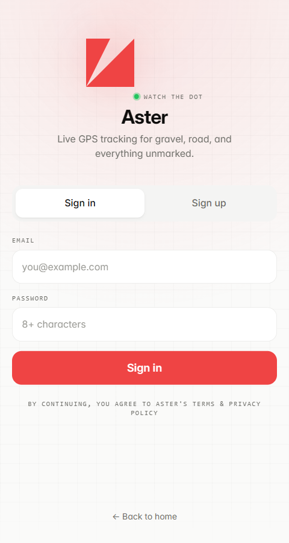
login signed-out state
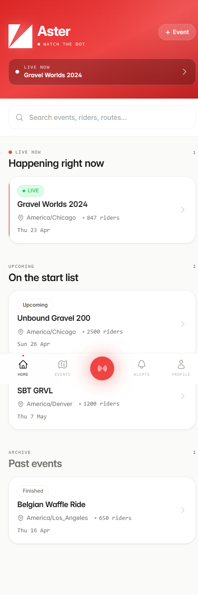
home · discover live + upcoming + archive
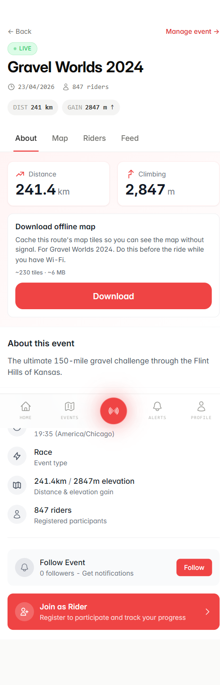
event page about + route stats
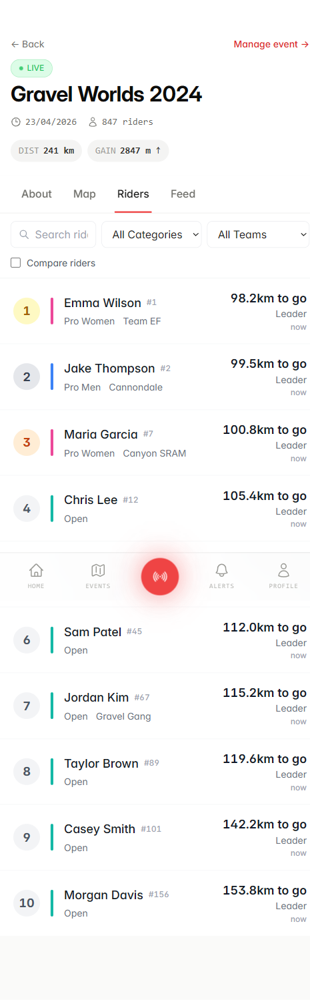
event · riders live leaderboard with category rails
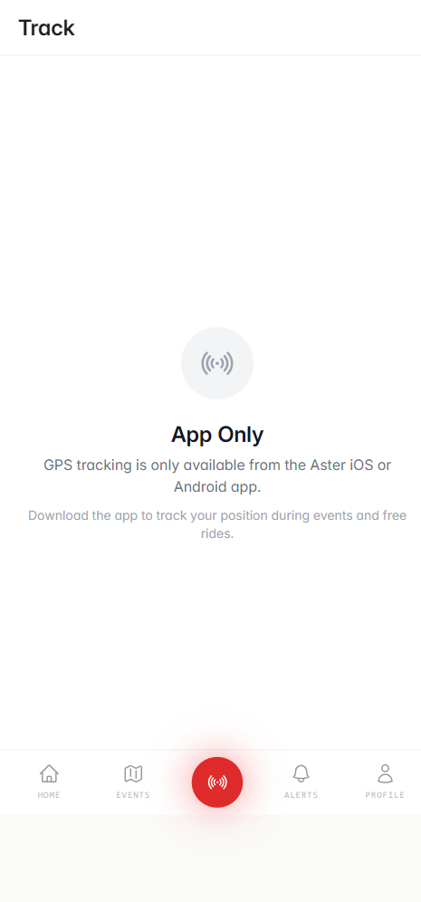
track app-only tracking gate
The palette — codified once in Tailwind config and CSS variables, used consistently across both surfaces.
actions · live · SOS
tracking active · OK
canvas (dark)
canvas (light)
UI copy, headings, body. Variable weight 400–700. Feature settings ss01, cv11.
Stats, data, eyebrow labels, timestamps. Tabular-nums globally.
Both projects compile from a cold build. Suggested next moves, ordered by value over cost:
classList.toggle('dark') flips the entire app.prefers-reduced-motion.Next.js 15 App Router · React 19 · Tailwind 3.4 · lucide-react · Inter + JetBrains Mono via next/font
✓ 9 static pages · ✓ 110 KB first-load JS · ✓ Fully static prerendered · ✓ Forward-compatible with Next 16
Existing Vite + React 19 + TypeScript · Tailwind token refresh · new CSS variables · shared component primitives
✓ TypeScript clean · ✓ Vite build 5.7 s · ✓ Home 12 kB · Event 55 kB · Track 28 kB